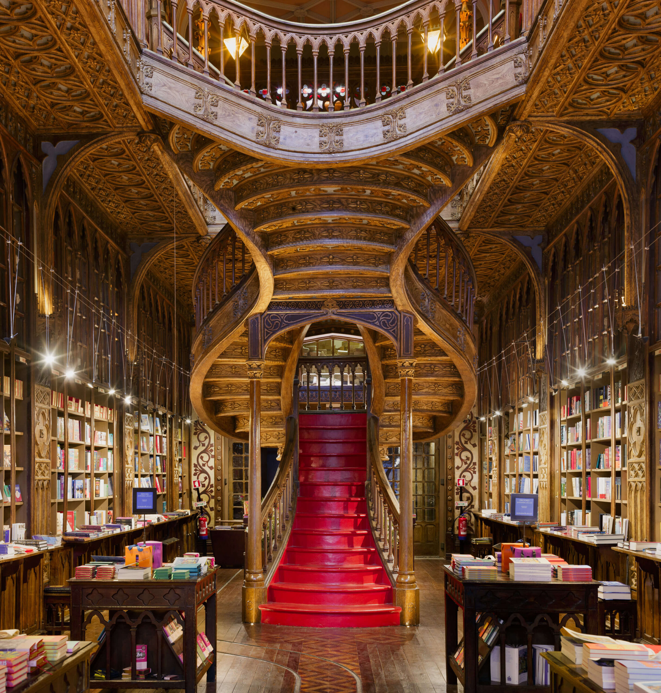
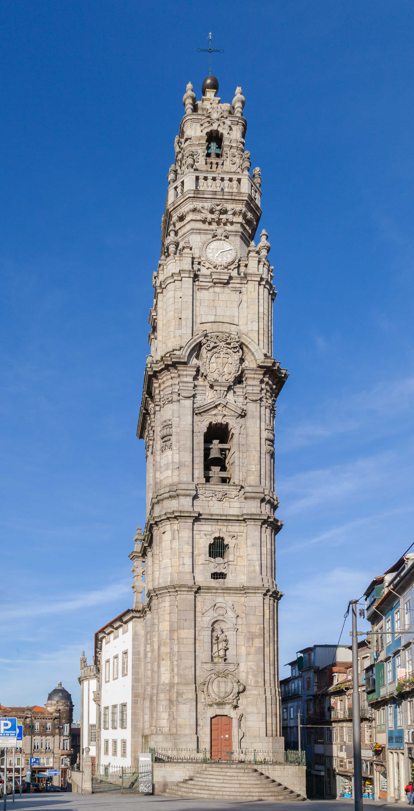
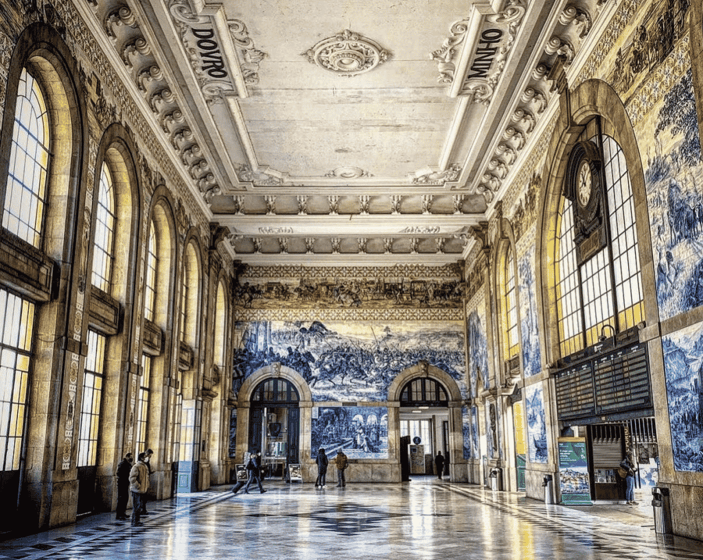

Porto Historical Sights & Architecture
Discover iconic granite churches adorned with azulejo tiles, historic bell towers, and world-renowned architectural landmarks across Porto.

World FamousLivraria Lello
One of the world's most beautiful bookstores, featuring a stunning neo-Gothic interior, stained-glass ceiling, and iconic crimson winding staircase.
- R. das Carmelitas 144, Porto
- €8 Voucher (Deducted if you buy a book)

Iconic SkylineClérigos Tower & Church
Climb 225 steps up this 75-meter Baroque bell tower for the most famous 360-degree panoramic view over Porto's orange terracotta rooftops.
- R. de São Filipe de Nery, Porto
- €8 Tower & Museum Entry

Azulejo MasterpieceSão Bento Railway Station
A breathtaking 20th-century railway station whose grand hall is lined with over 20,000 traditional blue-and-white azulejo tiles depicting Portuguese history.
- Praça de Almeida Garrett, Porto
- Free Entry
Erasmus Local Tip
Always book your Livraria Lello voucher online days in advance to secure a time slot and avoid standing in massive street queues. For São Bento Station, visit early morning or late at night when train commuters clear out so you can take amazing photos of the tiles uninterrupted!